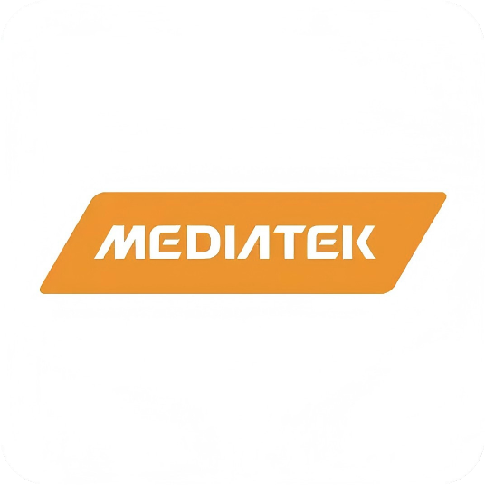

摩托罗拉的王朝
与诺基亚的迷茫
摩托罗拉——当之无愧的王者：横跨手机和通信设备两大业务。1G技术使用模拟信号，于20世纪80年代（中国为1987年）正式商用，采用FDMA频分多址技术，特点是仅支持语音通话。
诺基亚——百年历史的多元化工业集团：业务涵盖造纸、橡胶、电缆等多个领域。20世纪80年代末，诺基亚试图转型做消费电子产品，但由于盲目扩张和竞争加剧，亏损严重，甚至一度打算将手机业务出售给爱立信。
摩托罗拉全力投入耗资50亿美元的铱星计划，企图通过77颗低轨道卫星（后减为66颗）组建全球移动通信系统。这一技术奇迹最终成为商业灾难——3000美元一部的铱星手机和每分钟3–8美元的话费，让普通人望而却步。

王朝更迭
诺基亚六年登顶
进入2G时代，电子信号由模拟转变为数字（GSM、TDMA和CDMA），网络不仅能打电话，还能传输数据。欧洲的2G技术起步最快——1991年，GSM技术在欧洲商业化。
1992年，约玛·奥利拉出任诺基亚CEO，将公司更名为诺基亚电信公司。同年11月，诺基亚推出首款量产GSM手机——诺基亚1011（存储99个号码，通话90分钟，重量不足500克），极为惊艳，引发市场抢购。
初战告捷后，诺基亚与德州仪器深化合作，于1994年10月发布搭载ARM芯片的诺基亚2110，支持短信功能，其搭载的经典铃声成为一代人的记忆。
诺基亚向北京电信提供中国内地第一个GSM商用网络系统，时任邮电部部长吴基传用这款诺基亚2110拨通了中国首个商业GSM通话。


奥利拉的豪赌
奥利拉说服董事会出售所有传统业务，全力专攻通信行业——放弃了自1865年成立以来129年的保命之本。市场立刻验证了他的远见：诺基亚1994年销售额增长38%，手机及通信电缆部门占集团净销售额的64%，帝国就此崛起。
诺基亚9000 Communicator——商务旗舰，能发电邮和传真，折叠式全键盘设计，1996年发布
诺基亚6110——搭载"贪食蛇"游戏，风靡全球，开启游戏手机时代
诺基亚8110——"香蕉手机"，因《黑客帝国》而举世闻名，滑盖设计引领时尚
1998年以市占率23%（销量1.63亿部）超越摩托罗拉（20%），登顶全球手机龙头，短短6年从"差点卖身"到世界霸主


智能机萌芽
诺基亚的全盛
2002年，诺基亚推出搭载Symbian OS V6.0的诺基亚7650，配备30万像素彩色摄像头和彩色屏幕，成功在智能手机市场建立主导地位。自此，"诺基亚+塞班+德州仪器"的组合在全球市场所向披靡。
诺基亚9110——可扩展存储；诺基亚3650（塞班S60）——旋转键盘设计
诺基亚6108——支持手写输入；诺基亚7200——首款翻盖手机
诺基亚7610——首款百万级像素摄像头，开启移动摄影时代
诺基亚1100——"一代神机"，累计销量2.5亿台，史上最畅销手机
全年出货量达2.64亿部，是摩托罗拉的1.8倍。合作伙伴德州仪器也因此超越三星，成为全球第二大半导体供应商。为完全主导塞班，诺基亚持股比例接近50%。放眼全球，独孤求败——但危机悄然临近。


山雨欲来
五件改变世界的小事
2005年，几件看似微不足道的小事正在发生，但连起来看，预示着变革将至：
联发科（MediaTek）全力推广芯片业务，催生中国"山寨机"浪潮
谷歌花5000万美元收购了一家名叫"安卓"的小公司
史蒂夫·乔布斯正在向摩托罗拉学习造手机
Apple与富士康郭台铭洽谈合作，正在开发一个新系统
3G时代正式到来
乔布斯从牛仔裤口袋掏出iPhone——搭载iOS系统、3.5英寸多点触控电容屏，被媒体誉为"上帝的手机"。大屏触摸屏并非iPhone首创，但苹果让此后大部分手机都"类iPhone"化。诺基亚CEO康培凯对此不以为然——然而iPhone发布次年，诺基亚销售额比预期低29%，苹果市值超越诺基亚。

MediaTek Google
Google

塞班首款触摸屏手机诺基亚5800姗姗来迟。虽比iPhone便宜100美元，但老旧的UI、按键机操作逻辑、不灵敏的电阻屏和单点触控，让消费者望而却步。
Nokia N9
好评无数却生不逢时
2010年，诺基亚与英特尔合作开发 MeeGo 操作系统。2011年，搭载 MeeGo 的诺基亚N9发布，凭借独特的设计和流畅体验赢得了不少口碑。
但此刻，一场"特洛伊木马"正在上演——N9和 MeeGo 即将被战略性抛弃。

埃洛普的
致命三连决策
2010年，斯蒂芬·埃洛普上任诺基亚CEO——他曾是美国微软Office部门负责人。他上任后做出了一个争议巨大的决定：
① 立刻放弃已接近成熟的 MeeGo 操作系统
② 拒绝与已成气候的安卓合作
③ 转而选择与微软结盟，押注 Windows Phone
2011年10月26日，诺基亚Lumia 800发布，全球首款Windows Phone手机。之后又发布Lumia 900、Lumia 920等机型，但最终反响平平。
Windows Phone陷入"用户少→开发者少→应用少→用户更少"的恶性循环
Windows Phone 7无法升级到Windows Phone 8，背刺老用户，败坏路人缘
诺基亚自身研发能力持续萎缩、供应链整合乏力、硬件创新停滞不前


无法升级
背刺用户
生态失败